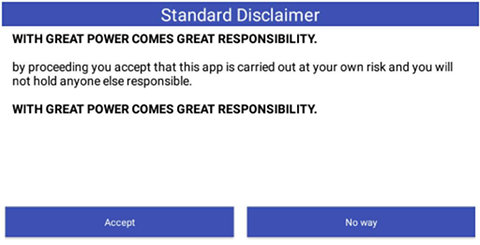
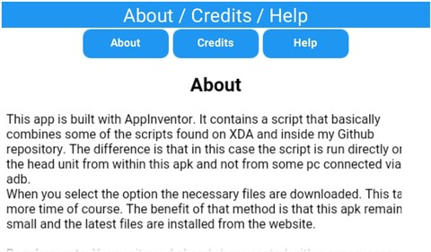
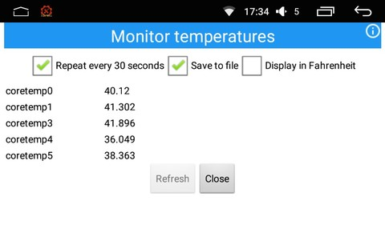
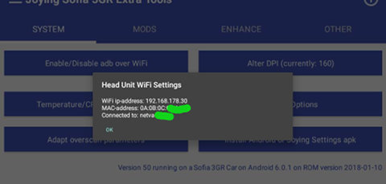
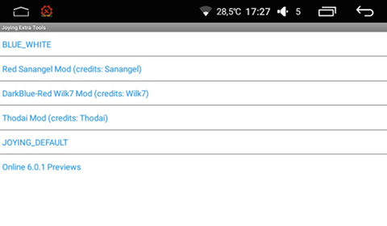
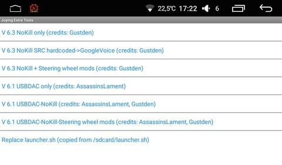
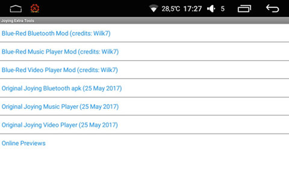

Note that actual screens and menus in the application may differ from the ones on this webpage.Click a screenshot for a fullsize version.
If you start the apk you will see the following screen upon startup.

This screen will always be displayed on every start. If you don't like that, sorry, but it will stay for my own protection.
| If you don't accept (No way) you will see: | If you do accept you will see: |
|---|
|
|
Note: This application needs root access for almost all options. That means that the first time a rooted action is performed, SuperSu will show a popup whether it is allowed to give root access to the "Joying Extra Tools" app. If you do this during one of the selected actions, it might not work due to the fact that the app and underlying routines get "focus", which makes it impossible to tap the SuperSu popup to give root access.
Advice: After first startup (and the Accept step), exit the application. Upon closure the app does cleanup temporary "stuff" and that requires root access as well. That's the moment to give root access, so it won't be necessary to do that on consecutive uses.
Note though that upon every update of this apk (or any apk that needs root access), you need to give it root access again.
Option: This behavior that you can only accept the rooting when SuperSu has focus is the "tapjacking protection". You can disable this in the SuperSu settings, but it is not advisable.
Note 2: This app needs a working WiFi connection to be able to install mods, e.g. to download the necessary files from the internet. Without WiFi that does not work of course.
If you have a 2G/3G/4G dongle you have internet access, but I can't check on those dongles. Please be careful as it can have impact on your data plan and lead to extra costs.
The top-left and top-right menus from the menu bar.
| top-left menu (when tapped upon) | top-right menu (when tapped upon) |
|---|
|  |
Temperature monitoring
This option reads the 5 temperature sensors upon opening the screen. It doesn't need root access.
After checking the checkbox "repeat every 30 seconds", the "Refresh" button is disabled and the option to write these measurements to file will be enabled. This file is saved to /sdcard (internal as the Joying file manager calls it) and has the name "YearMonthDate_HourMinutesSeconds.csv", meaning for example: "20171208_163315.csv", with hours in 24 hours format. The csv file is comma separated.
As long as you are in the "Monitor temperatures" screen, even if the app is in the background, the recording and saving will continue. That is, until the android task manager might kill it. Writing to file stops if you uncheck the box. Measurements and writing to file also stops if you exit the "Monitor temperatures" screen or close the app.
The saved file will look like
"YYYY-MM-DD hh:mm:ss","temp0","temp1","temp3","temp4","temp5"
"2017-06-28 16:46:06","35.476","33.202","34.335","30.404","32.077"
"2017-06-28 16:46:36","33.767","33.202","34.335","32.077","33.767"
"2017-06-28 16:47:07","33.767","34.335","34.335","32.077","33.767"
Simply open it in Google Spreadsheet, Excel, Libre/OpenOffice Calc or whatever other spreadsheet and mark the comma "," as separator. The fields are extra double-quotes surrounded to compensate for changing decimal separator ("." or ",").
My WiFi address
If you click the "My WiFi address" from the top-left menu,you will see something like:

The options from the main screen.
Again: If you do accept you will see:
Note that some options are buttons and others are "list pickers" (drop-down options).
Note also that the buttons/listpickers that allow you to install mods, also contain the original Joying apk. In case it doesn't work for you, you can always install/restore the Joying original.
- Enable adb over WiFi or Disable adb over WiFi: Depending on the current setting of the unit.
adb over WiFi is very handy, as you can access your unit from a distance. At the same time it is a security risk. When enabled, everyone able to "join" your WiFi network can within a minute access your unit on root level without even having to specify a password.
A good measure is always a strong password on your WiFi network (or your hot spot). This makes it off course much harder to hack. But if you don't need it, switch it off.
- Rooting / Busybox/ Rsync
- Update my SuperSU
This app can not root your unit! This app can only update a unit that already has SuperSU installed. SuperSU is automatically updated from the Play Store, but the accompanying binaries and libraries a This are not. This option installs the latest SuperSu apk, SE linux policies and another su binary.
- Update busybox: The busybox version installed on the Joying units is old and buggy. This will install a better one. It is strongly advised to install thisversion and it is a requirement for Viper4Android!
- Install rsync: rsync can be used for all kind of things. See for yourself.
- Radio Mods
Android 6.0.1 example screen

This Radio Mods listpicker gives a couple of options to install different colored Radios apps.
- SofiaServer Mods
Android 6.0.1 example screen

- NoKill: When the unit goes into sleep mode, all apps are killed apart from a few "designated" apps. This version makes sure that not one single app is killed when going into sleep mode.
- NoKill SRC hardcoded->GoogleVoice: This one has the NoKill feature. Additionally the SRC button of your steering wheel keys is hardcoded to start Google Voice (when installed) on your unit. Google voice can then be used to start a phone call, the radio, music player, navigation, etc. with a voice command.
- NoKill + Steering wheel mods: This one has the NoKill feature and (almost) complete functionality to assign commands or apks to your steering wheel keys and/or unit hardware keys. Note: It might require that you modify the default launcher.sh for your specific purpose.
- USBDAC only: This version enables the audio output to be improved via a USB DAC (one that is supported by the unit).
- USBDAC-NoKill: Like the USBDAC but also with the NoKill feature.
- Launcher.sh: If you install the Custom Key Mods (aka Steering wheel mods) version, you need to have a launcher.sh. The default launcher.sh is installed, but probably you need something slightly different. That means that you need to modify it. After modifying you need to place it in the root of the internal memory of your unit. Internal memory is also known as as /sdcard. Then the apk can find it and install it in the right location.
- Other Mods
Android 6.0.1 example screen

This Other Mods listpicker gives a couple of options to install different colored Mods for the Bluetooth app, Music Player and Video Player.
- Install Android or Joying Settings apk: Joying has its own Settings.apk. It has a few specific Joying options, but it also has some standard options removed like Bluetooth Settings, mount/unmount options for SDcards and the like. The Joying Settings.apk and the Android Settings.apk have identical package names being "com.android.settings". You can't install 2 of the same packages (= same package names, not necessarily same apk name). This option enables you to install one or the other and switch back and forth (with reboot in between).
- Install Viper4Android: Viper4Android is the leading audio enhancement tool. It will improve your sound quality but don't expect miracles as the used DAC in your Joying is not of high quality (see also the SofiaServer USBDAC version).
- Other Tools & Tweaks:
- Expand hosts file to prevent ads and malware: See see http://winhelp2002.mvps.org/hosts.htm
- Monitor temperatures (identical to the one in the top-left menu)
- Reboot: Guess what this does ;)
- Alter DPI (lcd_density): The default DPI setting for all the 1024x600 Joying units is 160. This option gives you the opportunity to select another DPI value.
Monitor temperatures (identical to the one in the top-left menu)
- Reboot: Guess what this does ;)
|
{kind=link}
{kind=link}
{kind=link}
{kind=link}
{kind=link}
{kind=link}
{kind=link}
{kind=link}
{kind=link}